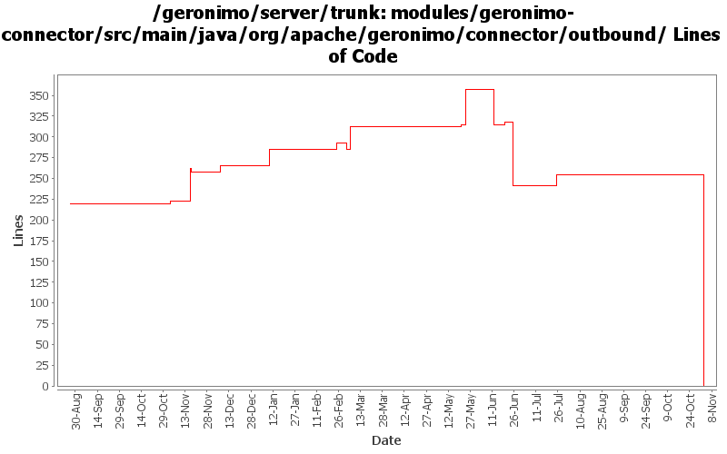

[root]/modules/geronimo-connector/src/main/java/org/apache/geronimo/connector/outbound
 connectionmanagerconfig
(0 files, 0 lines)
connectionmanagerconfig
(0 files, 0 lines)
 connectiontracking
(0 files, 0 lines)
connectiontracking
(0 files, 0 lines)
 security
(0 files, 0 lines)
security
(0 files, 0 lines)
 transactionlog
(0 files, 0 lines)
transactionlog
(0 files, 0 lines)

| Author | Changes | Lines of Code | Lines per Change |
|---|---|---|---|
| Totals | 158 (100.0%) | 396 (100.0%) | 2.5 |
| djencks | 35 (22.2%) | 248 (62.6%) | 7.0 |
| kevan | 72 (45.6%) | 78 (19.7%) | 1.0 |
| dain | 3 (1.9%) | 25 (6.3%) | 8.3 |
| jlaskowski | 4 (2.5%) | 24 (6.1%) | 6.0 |
| akulshreshtha | 3 (1.9%) | 7 (1.8%) | 2.3 |
| jbohn | 2 (1.3%) | 6 (1.5%) | 3.0 |
| rickmcguire | 2 (1.3%) | 4 (1.0%) | 2.0 |
| jdillon | 3 (1.9%) | 4 (1.0%) | 1.3 |
| prasad | 34 (21.5%) | 0 (0.0%) | 0.0 |
GERONIMO-3565. Modules distributed amongst framework/modules and plugins
0 lines of code changed in 34 files:
GERONIMO-2879 Change few more references to TM (j2eeType=JTAResource)
1 lines of code changed in 1 file:
GERONIMO-3344 use functional jars for tx and connector, g server code just wraps in gbeans. This commit has versions for new jars in the wrong place, I will fix this shortly
34 lines of code changed in 1 file:
GERONIMO-906 Component references involved in transaction recovery are backwards. Unfortunately this change includes a lot of import optimizations, I hope they are not too confusing to review
61 lines of code changed in 14 files:
GERONIMO-3083 fix j2ca container managed security
8 lines of code changed in 1 file:
GERONIMO-3246 Cleanup exception handling so stack traces for first failures are not discarded.
4 lines of code changed in 2 files:
GERONIMO-3175 clean up some unused code left over from not proxying connection factories
18 lines of code changed in 1 file:
GERONIMO-3175 make connection managers serializable, move some references around.
62 lines of code changed in 4 files:
GERONIMO-3175 Don't use proxies for connection factories. One bad side effect is that conection factories are not serializable
9 lines of code changed in 2 files:
r6720@Bliss: jason | 2007-03-20 01:48:14 -0700
(GERONIMO-2995) Replace backport-util-concurrent usage with java.util.concurrent
4 lines of code changed in 1 file:
GERONIMO-2838 Fix transaction recovery errors. A few changes from the last go-round. One, derby configuration problems have been fixed. Also, in AbstractConnectionManager we now insure that we're using the correct ManagedConnectionInfo. Also added additional logging in MCFConnectionInterceptor to capture failure information.
36 lines of code changed in 3 files:
GERONIMO-2114 Log errors which occur during execution of TimerTasks. Otherwise, RuntimeException or Error kills the Timer thread. Only indication of error is when you attempt to schedule another TimerTask. This should capture the root cause of the problem
4 lines of code changed in 1 file:
revert 511313 to get some tck tests passing again
6 lines of code changed in 2 files:
GERONIMO-2838 Initial fix for Transaction Recovery. Still some problems, but this enables the basic TR flows. This fix will identify a bug in AMQ. Until AMQ-1088 is fixed, expect to see an exception on startup
14 lines of code changed in 2 files:
GERONIMO-2715 Added support for Connector Lazy Activation
25 lines of code changed in 3 files:
GERONIMO-2607 reverted 485524
3 lines of code changed in 1 file:
GERGERONIMO-2607 Updated all GBeans to use new GBeanInfoBuilder.addOperation(..) method
3 lines of code changed in 1 file:
GERONIMO-2641 Add license headers to files. Thanks Jarek!
0 lines of code changed in 2 files:
GERONIMO-2632 Only try to destroy a connection once as a result of a ConnectionError event. Don't try to cleanup connections we're about to destroy
14 lines of code changed in 2 files:
GERONIMO-2537 Update the src headers in server/trunk/modules to be compliant with the new ASF src header and copyright policy (http://www.apache.org/legal/src-headers.html). I also did some cleanup of the src headers and tried to make them all a consistent format
24 lines of code changed in 58 files:
GERONIMO-2573 Be more careful about registering Synchronization with non-active tx. Also add a lot of trace level logging to help with the next connection leak.
42 lines of code changed in 8 files:
Partial fix for GERONIMO-2537 All Geronimo source files must be brought in line with the new ASF source header and copyright notice policy
The modules directory is supposed to be migrated. There're some issues with some files, but they'll be handled manually
24 lines of code changed in 4 files:
GERONIMO-2529 track connections closed in afterCompletion better
0 lines of code changed in 2 files:
GERONIMO-2313 Merge security fixes onto trunk. Insure that the Context contains the appropriate caller.
0 lines of code changed in 2 files:
GERONIMO-2354 Replace concurrent with backport-concurrent-util package
0 lines of code changed in 4 files:
Apply standard properties
0 lines of code changed in 2 files: